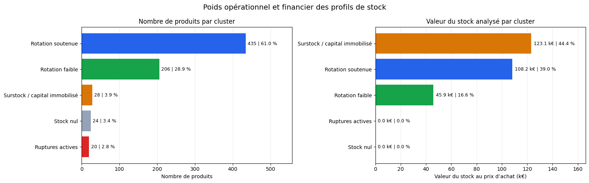

Projet phare · P6 enrichi par l’IAFiabiliser les données et piloter les ventes et les stocks d’un e-commerce
Contexte et besoin : transformation de trois sources ERP et Web hétérogènes en une base analytique contrôlée, puis utilisation de méthodes statistiques et de POC de machine learning pour prioriser les anomalies, les ruptures et les risques d’immobilisation financière.
Données : trois fichiers pédagogiques ERP, Web et liaison ; extraction de stock au 31 octobre et ventes du mois d’octobre. Les données brutes ne sont pas publiées dans ce portfolio.
Démarche
- Rapprochement ERP–Web et journalisation des anomalies
- Comparaison IQR/Z-score, Pearson/Spearman et trois modèles prédictifs
- Segmentation K-means des profils de stock et POC de validation Pandera
Résultats, impact et recommandations
- Prioriser 22 références vendues mais en rupture
- Cibler 27 produits présentant un risque d’immobilisation
- Formaliser des contrôles réutilisables sans automatiser la décision métier
Preuves produites : notebook reproductible, journal d’anomalies, POC prédictif, segmentation des stocks, contrat Pandera et documentation critique de l’usage de l’IA.
Limites et prochaines pistes : les données couvrent un seul mois. Le POC prédictif n’est pas destiné à un usage opérationnel et la stabilité des clusters doit être vérifiée sur plusieurs périodes. La prochaine étape consiste à constituer un historique et à valider les modèles chronologiquement.